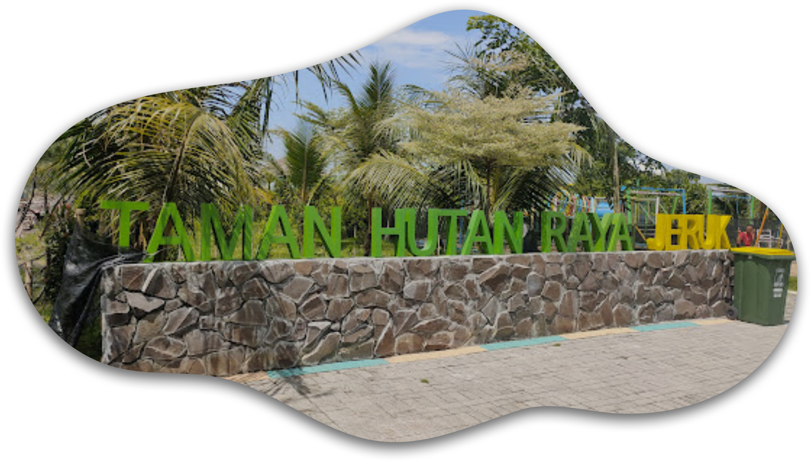

Hutan Kota Jeruk diresmikan pada [tanggal] sebagai salah satu upaya penghijauan kota oleh Pemerintah Surabaya. Dengan berbagai fasilitas seperti playground, kolam ikan, gazebo, dan keberadaan beberapa satwa, Hutan Kota Jeruk menjadi tempat rekreasi sekaligus edukasi bagi masyarakat.
Lokasi ini dirancang tidak hanya untuk keindahan tetapi juga untuk meningkatkan kesadaran masyarakat akan pentingnya konservasi alam di tengah kota.
Jl Raya Menganti, Jeruk No 277, Lakarsantri, Surabaya.Jogging track baru di Hutan Kota Jeruk Surabaya menawarkan pengalaman berlari yang unik dengan pemandangan sawah yang luas di sekelilingnya. Rute ini dirancang untuk memberikan kenyamanan bagi para pelari, pejalan kaki, dan penggemar olahraga ringan, sambil menikmati suasana pedesaan di tengah kota. Dengan udara segar dan hamparan hijau sawah yang menyejukkan mata, jogging track ini menjadi tempat ideal untuk berolahraga sekaligus melepas penat dari kesibukan sehari-hari.
Metode Club House adalah solusi modern dalam peternakan ayam yang fokus pada peningkatan kesejahteraan hewan dan efisiensi produksi. Dengan teknologi pengaturan suhu otomatis dan ventilasi pintar, ayam hidup dalam lingkungan yang nyaman dan bebas stres.
Sistem ini tidak hanya menghasilkan produk berkualitas tinggi, tetapi juga membantu dalam menjaga keberlanjutan lingkungan melalui pengelolaan limbah yang terintegrasi.
Nikmati berbagai fasilitas yang tersedia di Hutan Kota Jeruk untuk kenyamanan dan hiburan Anda.
Hutan Kota Jeruk menyediakan area bermain untuk anak-anak, dilengkapi dengan permainan yang aman dan ramah anak.
Kolam ikan dengan berbagai jenis ikan yang dapat dinikmati pengunjung. Lihat galeri kami untuk melihat keindahan kolam ini.
Gazebo yang nyaman untuk beristirahat sambil menikmati pemandangan alam sekitar.
Berbagai jenis satwa kecil dan unggas yang bisa dilihat oleh pengunjung, menambah kesan alamiah hutan kota.